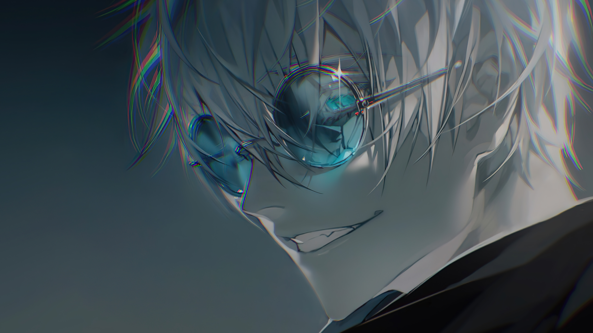

Satoru Gojo (五ご条じょう悟さとる Gojō Satoru?) is one of the main protagonists of the Jujutsu Kaisen series. He is a special grade jujutsu sorcerer and widely recognized as the strongest in the world. Satoru is the pride of the Gojo Family, the first person to inherit both the Limitless and the Six Eyes in four hundred years. He works as a teacher at the Tokyo Jujutsu High and uses his influence to protect and train strong young allies.
Satoru is extremely confident in his abilities and reputation as a powerful sorcerer, believing himself to be invincible. His opinion of others often only go as far as his judgement of their strength, and he is quite apathetic towards anyone he deems weak. Additionally, greatly influenced by his own desire for power, he is very arrogant. He is convinced that he is the strongest in the world, which he technically is, claiming, during his fight with Toji Fushiguro, that "throughout the Heavens and earth, he alone is the honored one." This can be further exemplified when he was tasked with protecting Riko Amanai, one of the few 'weak' people he genuinely grew to show compassion for. However, any empathy of her death was soon negated by his extensive amount of pride and arrogance after perfecting his reverse cursed technique in his following battle against Toji Fushiguro.
As a student, Satoru and Suguru were both considered "the strongest", capable of making short work of experienced and powerful curse users. After realizing and perfecting his capabilities, Satoru's abilities vastly increased to where he was able to put Toji Fushiguro into the defensive and ultimately kill him with his strongest technique, whereas before he and Geto were no match for the renowned Sorcerer Killer. As he continued to grow, he eclipsed Suguru's might to where Suguru admitted Satoru has truly become the strongest alone. Suguru also stated that Satoru had the capability of killing all of humanity by himself, which Suguru admitted was out of his own ability, and didn't even try to fight back when Satoru prepared to kill him, although Satoru ultimately relented as he was unable to kill his former friend.
Master Hand-to-Hand Combatant: Satoru, in addition to his overwhelming levels of cursed energy, is also an incredibly formidable martial artist in close combat, with extraordinary physical prowess to back up his skills. He was capable of completely overpowering Jogo in hand-to-hand combat, delivering several precise attacks on Jogo's fatal spots, and could even casually fight off and overpower both Jogo and Hanami with sheer close combat, easily countering their attacks and landing powerful hits that swiftly pummeled them into submission.